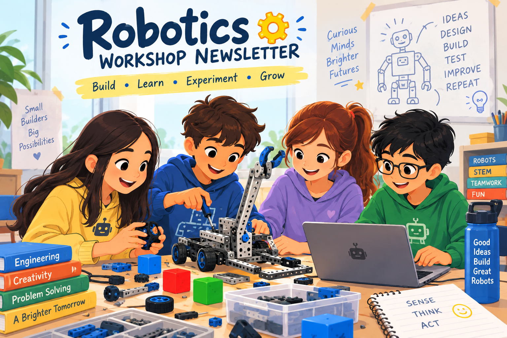
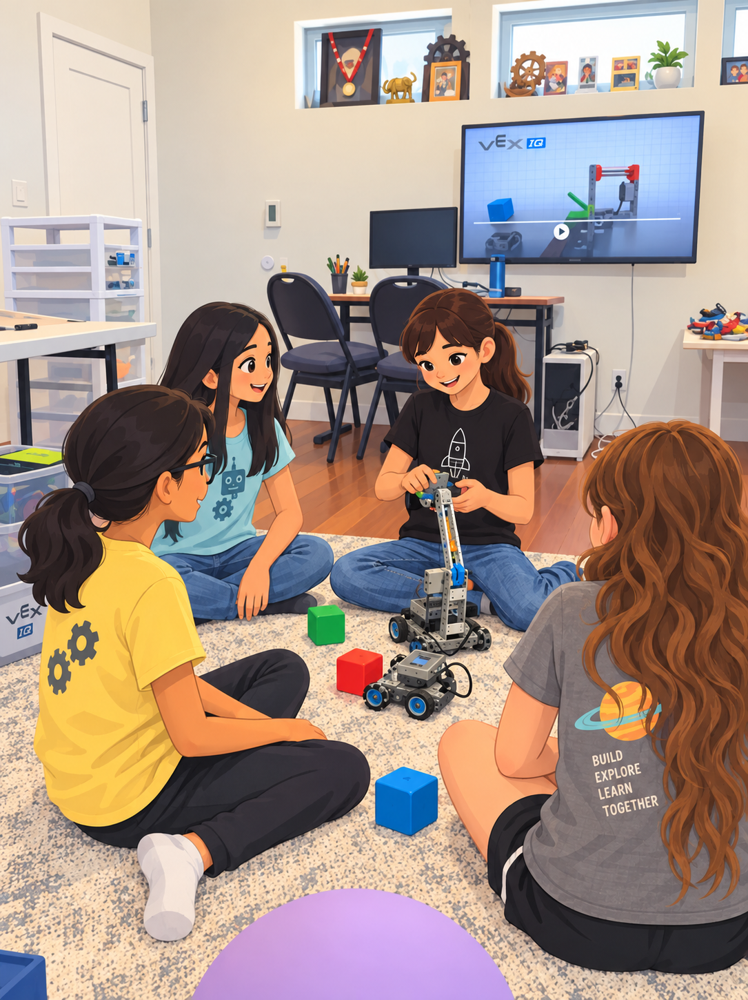
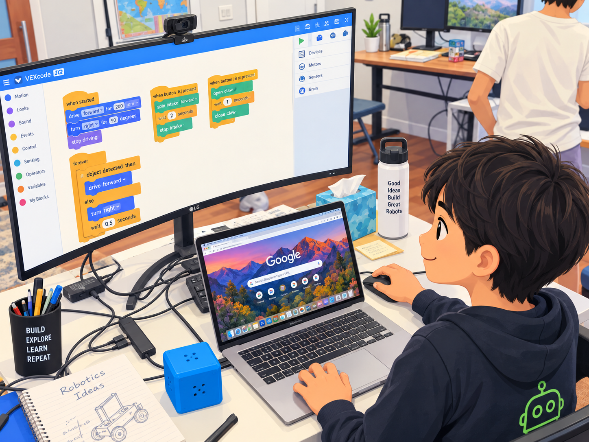

Robotics Newsletter #4
Two weekends of building, coding, experimenting and learning through VEX IQ.

Over the past month, we hosted two weekend VEX IQ robotics workshops for small groups of 5th–6th graders. Across both weekends, it was wonderful to see the kids move quickly from learning the basics to building, programming, experimenting, and — most importantly — figuring things out for themselves.
Day 1 — From Parts to Robots
We started with a simple introduction to how robots sense, think and act, followed quickly by hands-on building. The students learned their way around the VEX IQ system and built BaseBots and Clawbots from scratch, progressing from assembling the mechanical structure to controlling and programming their robots.
Along the way, we took a short break to watch some of the 2026 Humanoid Robotics Games, giving the kids a glimpse of how the same basic ideas of sensing, movement, control and engineering can eventually lead to remarkably sophisticated robots.

Day 2 — Design, Build, Test & Improve
The second day shifted from following instructions toward engineering and experimentation. The students sketched their designs and captured their learnings in engineering notebooks before tackling the weekend's bigger design challenge — building a rubber-band intake mechanism.
This proved to be a great lesson in the engineering cycle:
BUILD → TEST → TROUBLESHOOT → MODIFY → TRY AGAIN
Both groups successfully built working intake mechanisms. One group focused primarily on getting the mechanics right before we ran out of time for programming.
The other group was able to take the design further, building and programming a larger intake that could collect multiple cubes, store them inside the robot, and push them back out on command .
The different outcomes were themselves a good illustration of engineering — there isn't always one solution or one pace. Much of the learning comes from trying an idea, discovering what doesn't quite work, and figuring out what to change next.
And after two packed days of robotics, each workshop ended with a well-earned ice cream treat! 🍦

What's Next?
Thank you to all the families who participated and encouraged the kids. We've had several parents ask about opportunities to continue, so we're planning a follow-up robotics workshop/gathering in December. We'll share details once the format and dates are finalized.
Until then, we hope the kids keep building, coding, sketching ideas and staying curious about how things work.
Keep Exploring
For kids who would like to continue learning independently, here are a few useful resources:
- VEX IQ Build Instructions — try building new robots and mechanisms.
- VEXcode IQ — continue experimenting with block-based programming.
- VEX IQ Activities & STEM Resources — work through small robotics and coding challenges.
VEXcode supports Blocks and, as students progress, Python and C++. The official activities also include step-by-step beginner coding exercises with extensions for more experienced kids.
Even without a robot at home, experimenting with coding and sketching ideas for mechanisms in an engineering notebook are great ways to keep the learning going. 🤖
Thank You
Thank you for being part of our robotics community. It was wonderful to see the kids learning not just how to build robots, but how to experiment, troubleshoot, collaborate and keep improving their ideas.